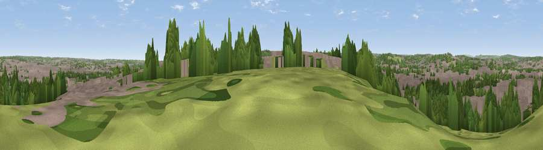

Viewpoint near Leeds
#36727 in England · top 71% of its area beats it · near LeedsThe view, rendered

A 360° render of this exact spot computed from the terrain model, tree cover and land cover — summer colours, afternoon light, calibrated against photographs of famous viewpoints. Real trees, hedges and buildings will differ in detail.
The panorama
Grey silhouette: terrain skyline in each direction (720 bearings, Earth curvature and refraction included). Dashed green: skyline with trees (+15 m) and buildings (+8 m) as obstacles. Blue strip: how far the ground is visible on each bearing.
Where the view opens
Wedge length = distance to the farthest visible ground on that bearing (vegetation-aware). Rings at 10, 25 and 50 km.
What fills the view
58% built-up · 26% woodland · 15% grassland ·
Angular shares of the visible panorama (visual magnitude), not map area. Landscape diversity 0.43 (0–1 Shannon).
Key numbers
More beautiful places nearby
The staircase of upgrades: each row has a higher view potential than everything closer. Driving times are estimates from straight-line distance, calibrated against real road routing — check an actual route before setting out.
| Place | Direction | Drive | Score |
|---|---|---|---|
| Viewpoint near Churwell | WNW · 3 km | ~7 min | 39.4 |
| Viewpoint near Churwell | S · 3 km | ~7 min | 53.9 |
| Viewpoint near Woodkirk | SSW · 7 km | ~14 min | 62.1 |
| Rawdon Trig point | NW · 11 km | ~21 min | 69.6 |
| Rawdon Billing | NW · 11 km | ~21 min | 73.0 |
| Viewpoint near Otley | NW · 16 km | ~28 min | 77.5 |
| Hood Hill | NNE · 54 km | ~76 min | 79.6 |
| Viewpoint near Thirlby | NNE · 56 km | ~78 min | 81.5 |
53.77835, -1.56027 · source: screening · position refined by local search. Computed location — check access rights before visiting.